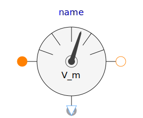
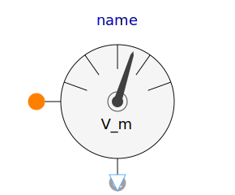

This package provides sensors for the magnetic potential difference and the magnetic flux in magnetic circuit.
| Name | Description |
|---|---|
|
|
Sensor to measure magnetic flux |
|  MagneticPotentialDifferenceSensor | Sensor to measure magnetic potential difference |
|  MagneticPotentialSensor | Sensor to measure magnetic potential |